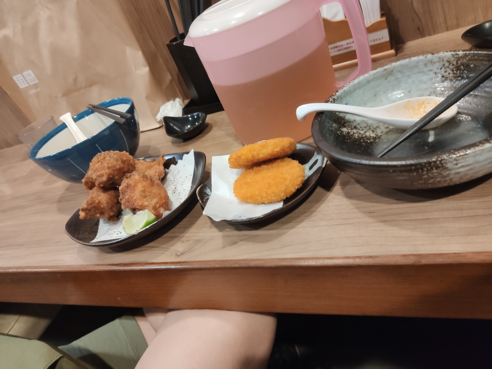
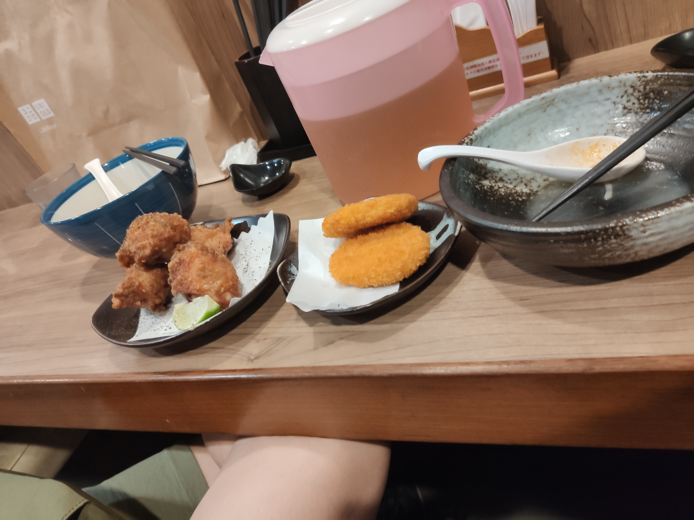
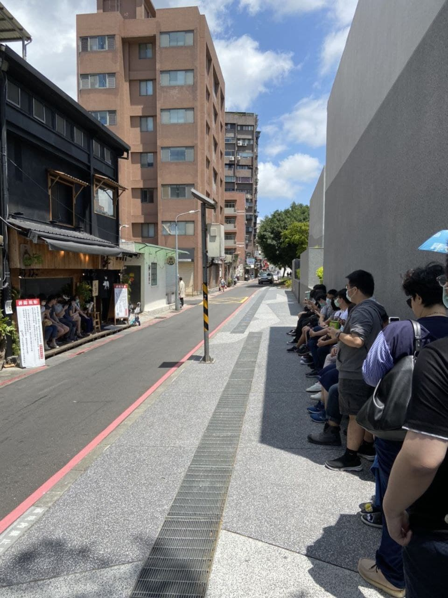
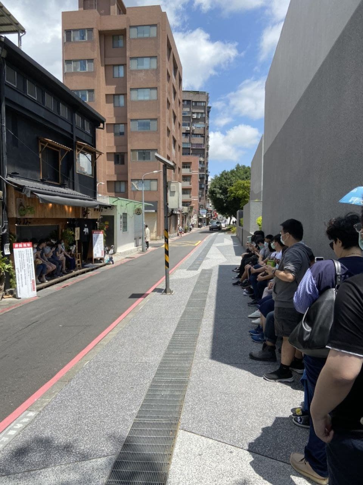
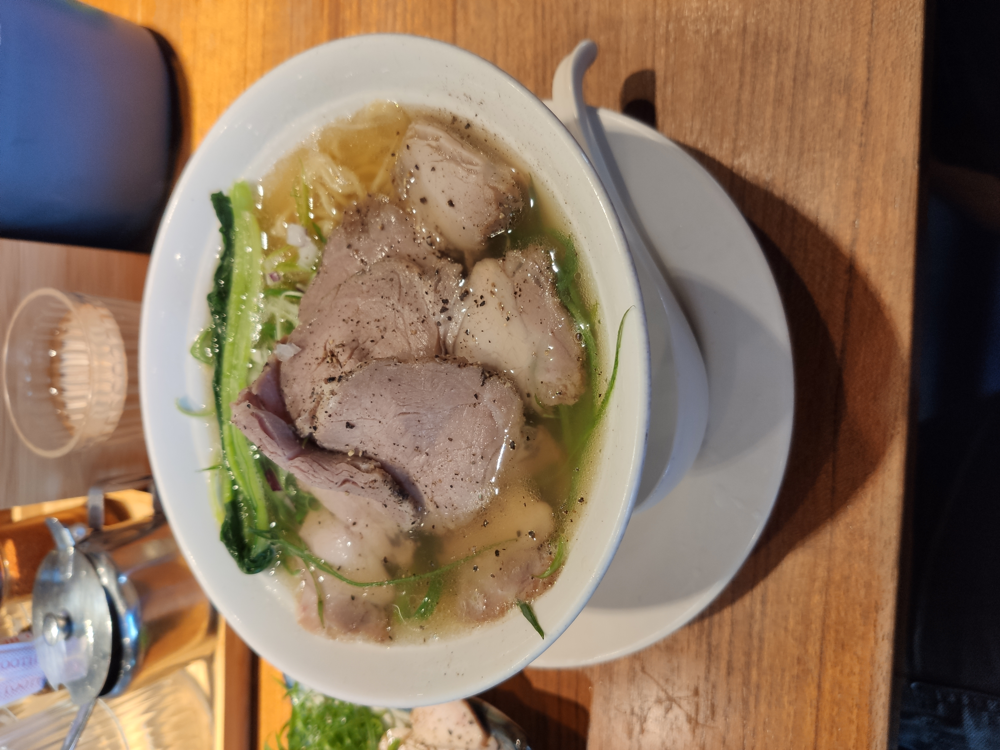
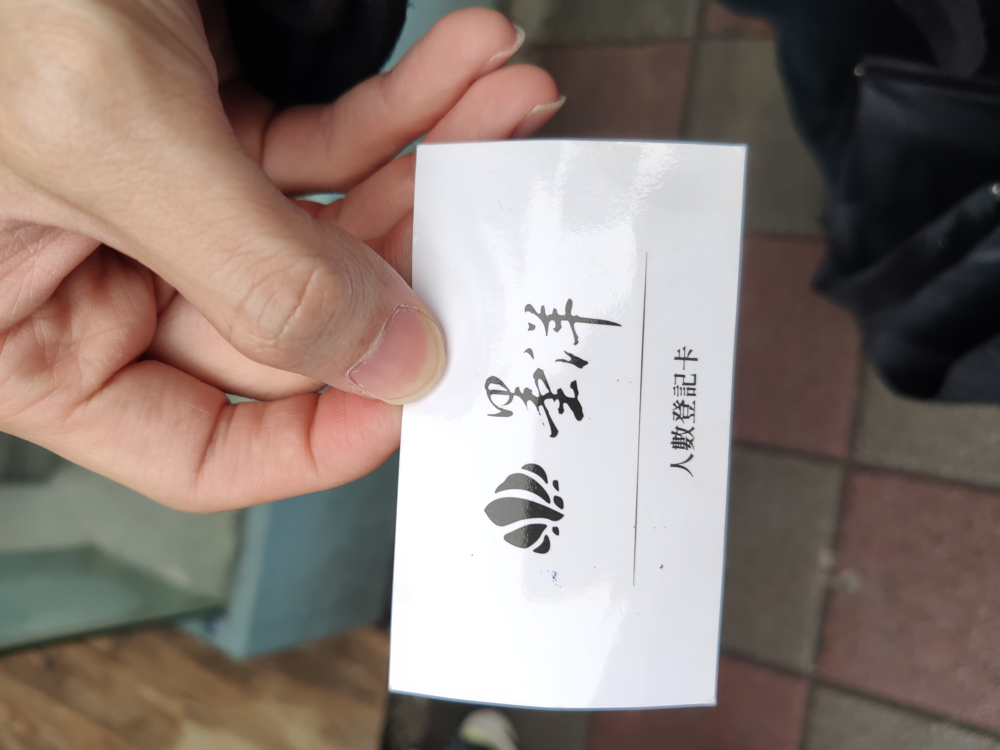
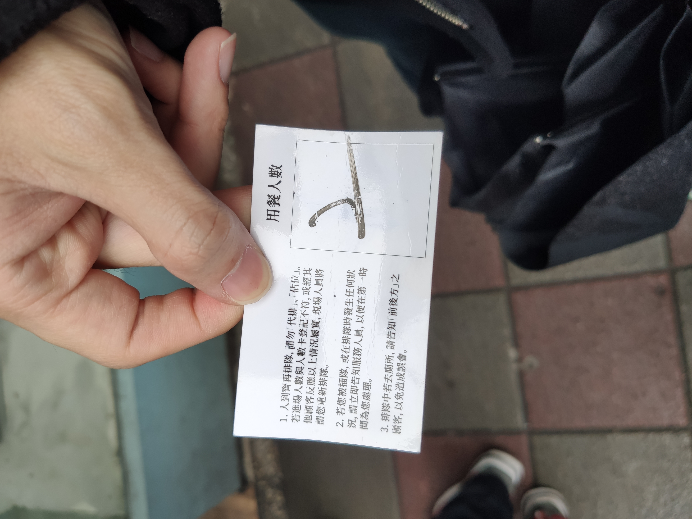
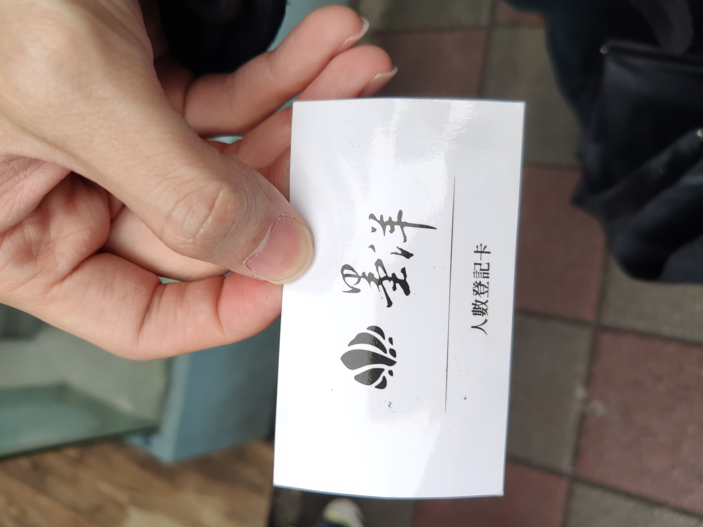
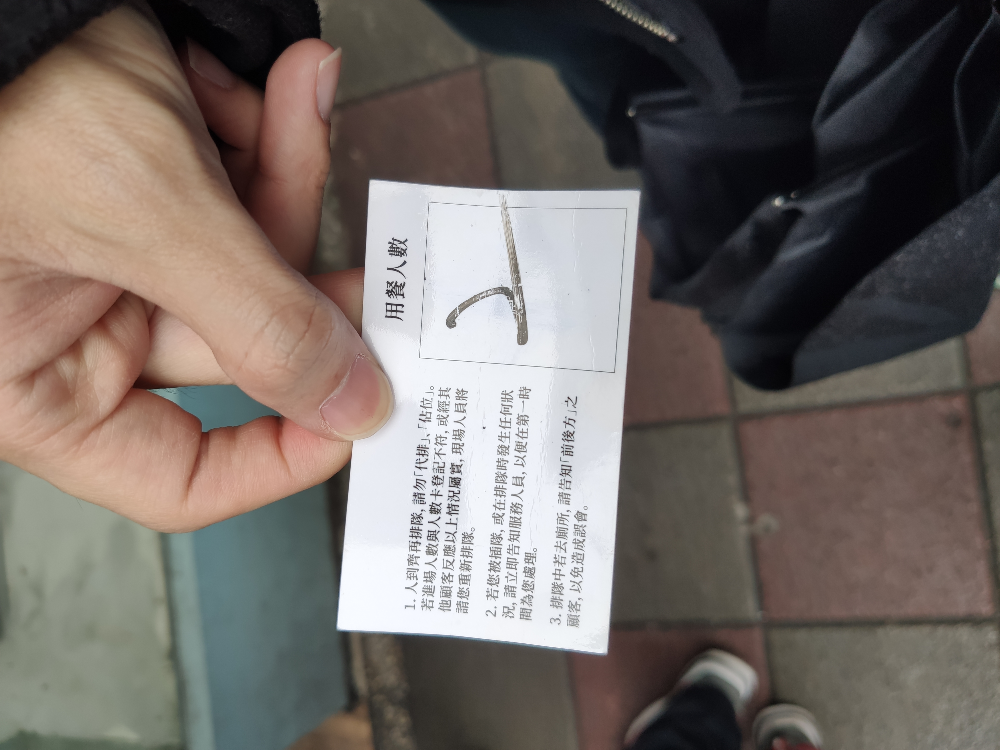
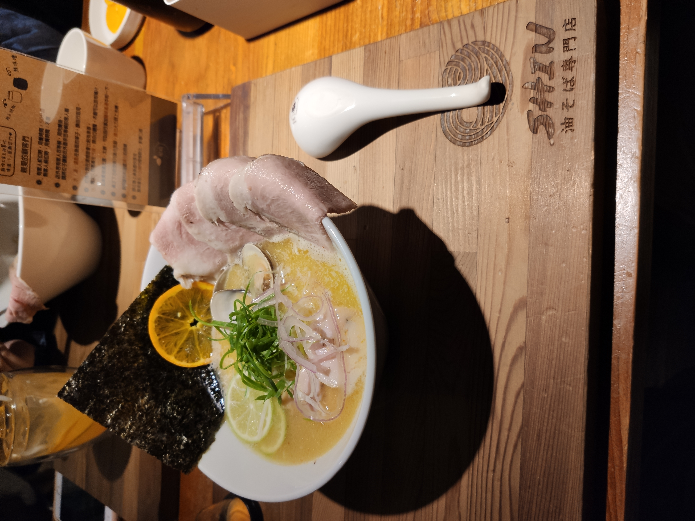

大台北的拉麵不敢說全部，但也吃過一半了吧!
紀錄一下，曾經的豐功偉業(絕對不是手機硬碟空間快滿了，趕快傳來電腦備份)
那就開始吧!
目錄：(之後照字典順序排序)
京都柚子豚骨拉麵研究中心
20211105
主打的是柚子胡椒的拉麵，點了招牌的1號改，麵中的確帶有柚子香味+胡椒的香味，不過有點像是上下分明的兩種味道，不確定是否是我未魂和完全之故，
之後跑去喝富有盛名的SOMA奶茶，口感的確不錯(飲冰室茶集4ni?!)
忘了 事後補
- 20211002
點了干貝甚麼來著的
麵屋輝
- 20210508

 

心血來潮的與學長跑去吃一間google評價不錯的店~ 這次點了 魚介豚骨沾麵220(麵量中) + 120 炸雞(4塊) + 60 可樂餅(2塊)，需要先用點餐機點完餐付款後(點餐機紙鈔只能付100元類型)，再由店員指引入座。座位後有一大壺的冰麥茶可自行倒取，沾麵味道還不錯，魚介與豚骨味道算香而不會太過濃烈，算是蠻開胃的，當時我就是無情的吃麵機器。吃完麵後，我與學長做了一會兒發現怎麼炸物都還沒上來，詢問了一下店員才發現竟然忘記做了= =，好在後續很快就上來了，炸雞表現不錯(深得學長喜愛)，可樂餅式咖哩風味的。
整體來說CP不錯，座位、店內冷氣算蠻舒適的。
隱家拉麵
- 20210424
今天終於來吃網路上飽受好評的”隱家拉麵”，根據相關文獻探討，是與士林《道樂屋台》體系相關的拉麵店。
這是早上11點抵達時的人潮。 這是早上11點半排隊的人潮。

這間店於早上11點半開始營業，這短短半小時聚集了相當數量準時的好食客。
大約排了一個鐘頭，12點半吧，終於可以入內點餐，這間店是使用點餐機，原本是想點富有盛名真鯛魚沾麵，但在排隊時查詢資料才發現這間店沒有販賣此產品，因為改為點網路上也大受好評的 黃金雞湯拉麵(180) + 豪華叉燒拼盤(100)，點完後店員詢問是否將叉燒拼盤與拉麵一起擺放，但因第一次吃，我選擇分開擺盤。
當時坐的位子在吧台前，不得不說，炎炎夏日，入內吹著涼涼的冷氣，爽!
這是早上11點半排隊的人潮。

這間店於早上11點半開始營業，這短短半小時聚集了相當數量準時的好食客。
大約排了一個鐘頭，12點半吧，終於可以入內點餐，這間店是使用點餐機，原本是想點富有盛名真鯛魚沾麵，但在排隊時查詢資料才發現這間店沒有販賣此產品，因為改為點網路上也大受好評的 黃金雞湯拉麵(180) + 豪華叉燒拼盤(100)，點完後店員詢問是否將叉燒拼盤與拉麵一起擺放，但因第一次吃，我選擇分開擺盤。
當時坐的位子在吧台前，不得不說，炎炎夏日，入內吹著涼涼的冷氣，爽!
這就是 黃金雞湯拉麵!

這就是 豪華叉燒拼盤!
這就是 黃金雞湯拉麵 + 豪華叉燒拼盤 合體!
這是學長點的 濃厚海老沾麵(250) + 豪華叉燒拼盤(100)，擺盤一起 型態!
我的天，兩種都十分豐盛，也怪不得人氣如此高，但因為是使用 蔥絲，而非蔥花，在吃蔥會有股特別的嚼勁，不是不好，只是比較少遇到特別點出來而已xD，拉麵內本身也有紫洋蔥以去膩感，雞腿叉燒讚讚。
吃完感想，真開心啊，這價位(280)吃到這種分量，也是好吃的類型，值得再來一次~ ((但下次希望能早點排進去，人真的太多啦~
麵屋壹之穴
20210410


 這家雖然是 豚骨魚介較為出名，但當時實在不想吃魚介xD，，就點了碗 松露清雞湯3.0，這家是使用點餐機，點完餐付完款，再把紙條給店家，等待~
比較特別是有松露，照片下面白白的是鮮蝦混沌!湯底的味道因為有松露，香香甜甜的~
(偷偷喝了跟我一起去的學長點的豚骨魚介的湯頭，好香阿，沒有以往魚介腥腥的感覺，下次來我壹定點!)
這家雖然是 豚骨魚介較為出名，但當時實在不想吃魚介xD，，就點了碗 松露清雞湯3.0，這家是使用點餐機，點完餐付完款，再把紙條給店家，等待~
比較特別是有松露，照片下面白白的是鮮蝦混沌!湯底的味道因為有松露，香香甜甜的~
(偷偷喝了跟我一起去的學長點的豚骨魚介的湯頭，好香阿，沒有以往魚介腥腥的感覺，下次來我壹定點!)
九湯屋
20210409
 下班回家意外在巷子內開的拉麵店，照片是蒙古白湯(印象中)，微辣，湯頭香，但沒什麼味道，勝在麵量蠻多的，吃粗飽可以考慮~
下班回家意外在巷子內開的拉麵店，照片是蒙古白湯(印象中)，微辣，湯頭香，但沒什麼味道，勝在麵量蠻多的，吃粗飽可以考慮~
凪Nagi
20210407
 很久沒吃NAGI了，就下班跑去大直店吃吃，這家位於大樓內的二樓，外觀甚是氣派，位子也不少，這次點的是 限定王 - 北海道王，湯頭不錯，微辣，青椒也不少，但不知是不是作業疏失，碗中沒有看到點的豬腩肉!?只好頂著饅頭疑惑離開了.
很久沒吃NAGI了，就下班跑去大直店吃吃，這家位於大樓內的二樓，外觀甚是氣派，位子也不少，這次點的是 限定王 - 北海道王，湯頭不錯，微辣，青椒也不少，但不知是不是作業疏失，碗中沒有看到點的豬腩肉!?只好頂著饅頭疑惑離開了.
勝王
20210327
 早上11點半開門，我11點到，已經有如此人潮啦~
早上11點半開門，我11點到，已經有如此人潮啦~


 豬肉真的好吃，尤其是那個醬，甜甜的很入我的味覺，加上豬肉軟爛又大塊
拉麵可能是因為當天沒吃早餐，加上麵又是點最重口味的，因為沒啥胃口導致評價一般xDD 剛吃幾口很驚豔，但後面就有點膩了 (黑油蔥還啥的~)
豬肉真的好吃，尤其是那個醬，甜甜的很入我的味覺，加上豬肉軟爛又大塊
拉麵可能是因為當天沒吃早餐，加上麵又是點最重口味的，因為沒啥胃口導致評價一般xDD 剛吃幾口很驚豔，但後面就有點膩了 (黑油蔥還啥的~)
山嵐拉麵
20210312

 味道濃醇香~ 很中庸的一碗拉麵，我評價挺高的~ CP也不錯
味道濃醇香~ 很中庸的一碗拉麵，我評價挺高的~ CP也不錯
鬼金棒
20210305
 沒什麼好說的 棒! 這次點的是 台灣版(有梅花肉那個)，肉真的多 讚讚
沒什麼好說的 棒! 這次點的是 台灣版(有梅花肉那個)，肉真的多 讚讚
墨洋拉麵
20210227
在公館擁有高評價的貝系拉麵，實在是無法抗拒大干貝的誘惑，因此今天身體就誠實的跑去排隊~
當天早上11點就抵達店門口，當時沒人排隊。 在附近逛了一下，11:40想說也該排隊了，就看到了下圖場景...
在附近逛了一下，11:40想說也該排隊了，就看到了下圖場景...
 當時還有下雨，但看到這麼多人一起排隊，心中讚嘆吾道不孤(?)，之後店員再確認人數後，發給我們一張排隊卡(事先寫好人數，確認人數後再給你的)


我要吃大干貝! 這次點了 極上貝貝拉麵(260) + 溏心蛋(30) + 究極星鰻海陸TKG(129)
當時還有下雨，但看到這麼多人一起排隊，心中讚嘆吾道不孤(?)，之後店員再確認人數後，發給我們一張排隊卡(事先寫好人數，確認人數後再給你的)


我要吃大干貝! 這次點了 極上貝貝拉麵(260) + 溏心蛋(30) + 究極星鰻海陸TKG(129)

 先說說這究極星鰻海陸TKG，這叉燒飯，這星鰻，怎麼說呢，對我而言生了點，有種 阿 是叉燒飯+星鰻呢，的樸實感。
再說說這極上貝貝拉麵，大干貝好吃! 其餘的，不差，湯頭淡麗，麵條樸實，整體來說 就是挺食材味道的樸實無華，或許能說沒有其他多餘的調味? 也難怪會被讚嘆是高CP的學生黨平價拉麵。
先說說這究極星鰻海陸TKG，這叉燒飯，這星鰻，怎麼說呢，對我而言生了點，有種 阿 是叉燒飯+星鰻呢，的樸實感。
再說說這極上貝貝拉麵，大干貝好吃! 其餘的，不差，湯頭淡麗，麵條樸實，整體來說 就是挺食材味道的樸實無華，或許能說沒有其他多餘的調味? 也難怪會被讚嘆是高CP的學生黨平價拉麵。
柑橘shinn
20210216
網路上的網美名店!?抽空跟學長去吃，真的是人潮鼎盛。
當天是開始營業時間，也就是11點半抵達，圖片是當時現場的人潮，由於是採登記後叫號的制度，因此有不少人登記後就先離開，但當時現場還有這麼多人現場等待，可見其人氣。 當天從登記後，直到兩個鐘頭後，也就是1點半才進去，也是很佩服我們的勇氣與毅力。
進去後，由於人數眾多，因此我跟學長是與其他人併桌坐的，當時四人桌對面坐的是兩位大一大二的年輕妹子，但是 妹子再漂亮，也不是今天我來這的重點!
當天從登記後，直到兩個鐘頭後，也就是1點半才進去，也是很佩服我們的勇氣與毅力。
進去後，由於人數眾多，因此我跟學長是與其他人併桌坐的，當時四人桌對面坐的是兩位大一大二的年輕妹子，但是 妹子再漂亮，也不是今天我來這的重點!
這是很有格調的桌面托盤，桌上左上方有一個計時3分鐘的沙漏，因為是果香拉麵，因此這沙漏是提醒用餐者，不要讓相機吃太久的時間，會讓果香太沉浸在拉麵中從而破壞口感~ 很貼心的設計呢~
近拍這LOGO
點的是 雞白湯柑橘蛤蜊(260) + Mini叉燒飯(60)

因為實在是想開動了，就忘記拍叉燒飯，當時照片外還有多上一個小盤子，可以用來裝柑橘片以及蛤蜊殼。
真好吃~
鷹流
- 20210210
本次來的是 鷹流 本店，有著濃厚口感的拉麵店~
這次點的是 9號 鷹流沾麵(280) + 時蔬佐芝麻(50)
 吃完就是滿嘴的濃厚味，不是油膩，是濃厚~ 舒服
吃完就是滿嘴的濃厚味，不是油膩，是濃厚~ 舒服